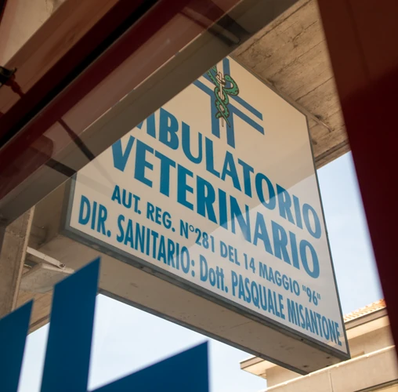
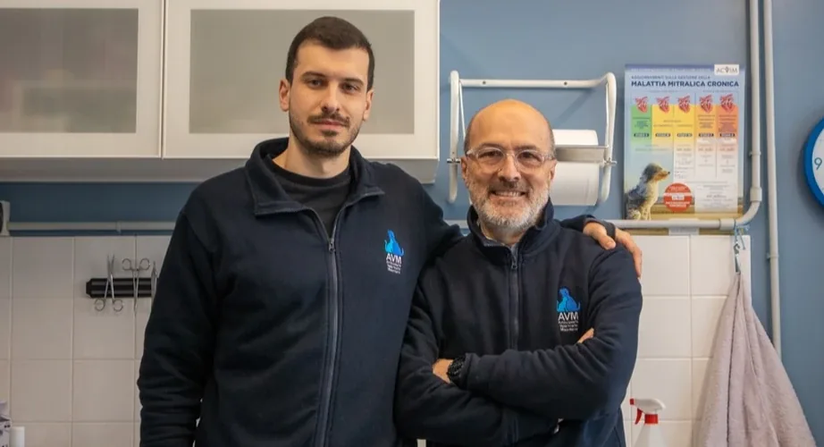
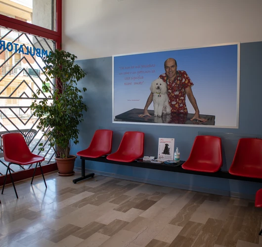

Chi siamo?
Dal 1992 ci occupiamo della salute del tuo amico a quattro zampe.
Il dott. Pasquale Misantone e il suo team, hanno costruito un ambiente professionale e famigliare per garantire la migliore assistenza al tuo fidato compagno.



Viale Giovanni Bovio, 175
Dal 1992 ci occupiamo della salute del tuo amico a quattro zampe.
Il dott. Pasquale Misantone e il suo team, hanno costruito un ambiente professionale e famigliare per garantire la migliore assistenza al tuo fidato compagno.
È preferibile in ogni caso chiamare per
prenotare un appuntamento:
| LUNEDÍ | 9:00 - 12:30 | 16:00 - 19:30 |
| MARTEDÍ | 9:00 - 12:30 | 16:00 - 19:30 |
| MERCOLEDÍ | 9:00 - 12:30 | 16:00 - 19:30 |
| GIOVEDÍ | 9:00 - 12:30 | 16:00 - 19:30 |
| VENERDÍ | 9:00 - 12:30 | 16:00 - 19:30 |
| SABATO | Appuntamento | SOLO URGENZE |
| DOMENICA | SOLO URGENZE | SOLO URGENZE |
Tocca una foto per aprirla a schermo intero
Passa il dito sullo schermo o muovi il cursore sul suo musetto per fargli le coccole.
Ti guarda scodinzolando...